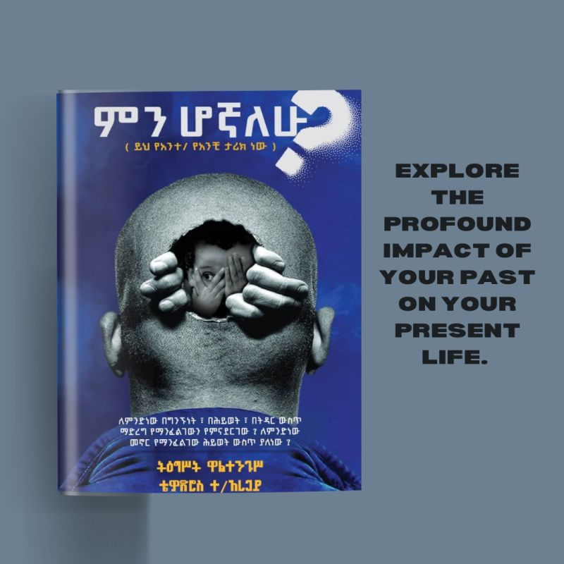

📖 My Recommendations
A powerful book that changed how I understand psychology and healing.

ምን ሆኛለሁ
📖 About the Book
This book is not just a story — it is based on real therapy sessions with real people. The writers are professional psychologists who worked closely with individuals struggling with deep emotional and psychological wounds.
Through their stories, the book gives us a deep understanding of how our minds work, why we feel the way we do, and how we can heal from past wounds.
🧠 What This Book Teaches Us
- How childhood trauma affects adulthood — painful experiences shape our behavior and relationships.
- How to heal ourselves — practical guidance to recognize emotional wounds and begin healing.
- Understanding psychology — why we think, feel, and act the way we do.
- Breaking the cycle of pain — how to break free from negative patterns.
- Self-awareness and growth — understand yourself and become the best version of you.
"A book that helps you understand yourself and heal from the inside."